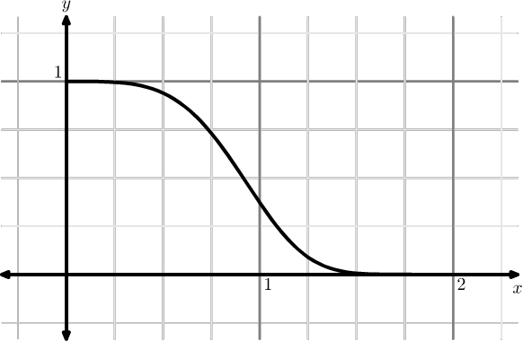

Integration by Parts
Table of Contents
1. Asymptotic Behavior of Integrals
Question: Why do we care about integrals?
Answer 1: Many special functions may be written in an "integral representation". For example:
- Bessel function: \(J_{0}(x)=\displaystyle\frac{1}{\pi}\int^{\pi}_{0}\cos\bigl(x\sin(t)\bigr)\,\D t\)
- Error function: \(\operatorname{erf}(x)=\displaystyle\frac{2}{\sqrt{\pi}}\int^{x}_{0}\E^{-t^{2}}\,\D t\)
- Gamma function: \(\Gamma(x) = \displaystyle\int^{\infty}_{0}t^{x-1}\E^{-t}\,\D t\)
Answer 2: When we're solving linear differential equations, we use transform methods to express the solution as an integral. We can't solve it in general, but we may determine its asymptotic behavior.
2. Example: Incomplete Gamma Function
Consider
\begin{equation} I(x) = \int^{\infty}_{x}\exp(-t^{4})\,\D t. \end{equation}What is the large \(x\to\infty\) and small \(x\to0\) behavior of this integral?
2.1. Small x
The first, tempting, strategy is to use the Taylor series expansion
\begin{equation} \exp(-t^{4}) = 1 - t^{4} + \frac{1}{2}t^{8} +\dots \end{equation}But the integral doesn't simplify. We just get a sum of divergent integrals:
\begin{equation} I(x) = \int^{\infty}_{x} \left(1 - t^{4} + \frac{1}{2}t^{8} +\dots\right)\,\D t \end{equation}The integrand may be plotted:

Figure 1: Plot of the integrand
Perhaps surprising how, over the domain \(0\leq x\lt 1\), the integrand is larger than 0.36 and for \(x\lt0.75\) it's nearly 1. We could use a "negative space" argument, treating
\begin{equation} I(x) = I(0) - \displaystyle\int^{x}_{0}\E^{-t^{4}}\,\D t. \end{equation}We have
\begin{equation} I(0) = \frac{\Gamma(1/4)}{4} \approx 0.90640248 \end{equation}Believe me? No, you shouldn't. To see this, we do a change of variables to \(\tau=t^{4}\), hence
\begin{equation} \D t = \frac{1}{4}\tau^{-3/4}\,\D\tau \end{equation}and the integral is
\begin{equation} I(0) = \int^{\infty}_{0}\frac{1}{4}\tau^{-3/4}\E^{-\tau}\,\D\tau \end{equation}which, looking above at the definition of the gamma function, gives us the desired result.
Now, for the second integral, we can use Taylor expansion to give us
\begin{equation} \begin{split} I_{2}(x) &= \int^{x}_{0}\left(1 - t^{4} + \frac{1}{2}t^{8}+\dots\right)\D t\\ &= x - \frac{x^{5}}{5} + \frac{x^{9}}{18} + \dots \end{split} \end{equation}Hence we have
\begin{equation} I(x) = \frac{\Gamma(1/4)}{4} - \left[x - \frac{x^{5}}{5} + \frac{x^{9}}{18} + \dots\right]. \end{equation}This is convergent, but useless for \(x\lesssim 1\). The L2-distance-squared between the three-term approximation and exact integral, over the domain \(0\lt x\lt1\), is about \(4.44854\times 10^{-6}\). The maximum distance is at \(x=1\), which underestimates the true value by \(0.010717\) or so.
2.2. Large x
The trick for approximating \(I(x)\) for large \(x\) is to deploy integration-by-parts, a classic tool from classical analysis. We observe
\begin{equation} \D(\E^{-t^{4}}) = \E^{-t^{4}}\,\D(-t^{4}) = (-4t^{3})\E^{-t^{4}}\,\D t \end{equation}hence
\begin{equation} u\,\D v = \frac{-1}{4t^{3}}\D(\E^{-t^{4}}) = \E^{-t^{4}}\,\D t. \end{equation}Then the integral is
\begin{equation} \begin{split} I(x) &= \int u\,\D v = \left.uv\right|^{t=\infty}_{t=x} - \int v\,\D u\\ &= \frac{\E^{-x^{4}}}{4x^{3}} + \displaystyle\int^{\infty}_{x}\E^{-t^{4}}\left(\frac{3}{4}t^{-t}\right)\D t. \end{split} \end{equation}The integral in the second line is the remainder term, \(R(x)\). We now claim
\begin{equation} I(x)\sim \frac{\E^{-x^{4}}}{4x^{3}} \end{equation}with remainder \(R(x)\).
Now, if this is working, if integation by parts is producing the correct asymptotic approximation, then we would have
\begin{equation} I(x)\gg R(x) \end{equation}and in particular
\begin{equation} \frac{\E^{-x^{4}}}{4x^{3}}\gg R(x). \end{equation}We'd need to prove it. We will find an upper bound on the remainder term
\begin{equation} |R(x)| = \frac{3}{4}\left|\int^{\infty}_{x}\frac{1}{t^{4}}\E^{-t^{4}}\,\D t\right| \end{equation}which can be rewritten as
\begin{equation} |R(x)| = \frac{3}{4}\left|\int^{\infty}_{x}\frac{1}{t^{4}}\frac{1}{4t^{4}}\D(\E^{-t^{4}})\right| \end{equation}Then since \(x^{7}\lt t^{7}\) we have \(x^{-7}\gt t^{-7}\) giving us the bound
\begin{equation} |R(x)| \leq \frac{3}{16x^{7}}\left|\int^{\infty}_{x}\D(\E^{-t^{4}})\right|. \end{equation}Hence
\begin{equation} |R(x)| \lt\left|\frac{3}{16x^{7}}\E^{-x^{4}}\right| \end{equation}which is \(x^{-7}\) times smaller than the asymptotic approximation of \(I(x)\). Since this is for large \(x\to\infty\), we find
\begin{equation} 0\leq\lim_{x\to\infty}\frac{|R(x)|}{\E^{-x^{4}}/(4x^{3})}\leq\lim_{x\to\infty}\frac{\frac{3}{16x^{7}}\E^{-x^{4}}}{\E^{-x^{4}}/(4x^{3})}=0. \end{equation}Hence \(R(x)\ll \E^{-x^{4}}/(4x^{3})\).
The large \(x\) approximation starts working around \(x\approx 3/2\). The small \(x\) approximation works until \(x\approx 1\). The only difficult domain not described by these approximations are \(1\lesssim x\lesssim3/2\).
3. Usefulness for Laplace-Type integrals
Integration by parts remains a great strategy for Laplace-type integrals of the form
\begin{equation} I(x) = \int^{b}_{a} f(t)\E^{x\phi(t)}\,\D t \end{equation}as \(x\to\infty\). Using the same trick as in the previous example
\begin{equation} I(x) = \int^{b}_{a} \frac{f(t)}{x\phi'(t)}\D(\E^{x\phi(t)}) \end{equation}assuming \(\phi'(t)\neq0\) in \((a,b)\). Now integration by parts yields
\begin{equation} \begin{split} I(x) &= \left.\frac{1}{x}\frac{f(t)}{\phi'(t)}\E^{x\phi(t)}\right|^{t=b}_{t=a} - \frac{1}{x}\int^{b}_{a}\E^{x\phi(t)}\frac{\D}{\D t}\left(\frac{f(t)}{\phi'(t)}\right)\,\D t\\ &= \left.\frac{1}{x}\frac{f(t)}{\phi'(t)}\E^{x\phi(t)}\right|^{t=b}_{t=a} - R(x). \end{split} \end{equation}This second term, the integral, is the remainder of using the boundary term as the asymptotic approximation. The approximation is
\begin{equation} \begin{split} I(x)&\sim \left.\frac{1}{x}\frac{f(t)}{\phi'(t)}\E^{x\phi(t)}\right|^{t=b}_{t=a}\\ &=\frac{1}{x}\left(\frac{f(b)}{\phi'(b)}\E^{x\phi(b)} - \frac{f(a)}{\phi'(a)}\E^{x\phi(a)}\right). \end{split} \end{equation}Usually one of these two terms dominate as \(x\to\infty\) (the other dies off exponentially fast).